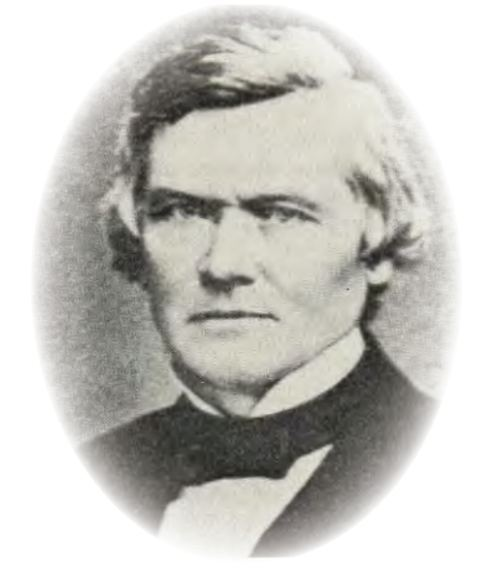
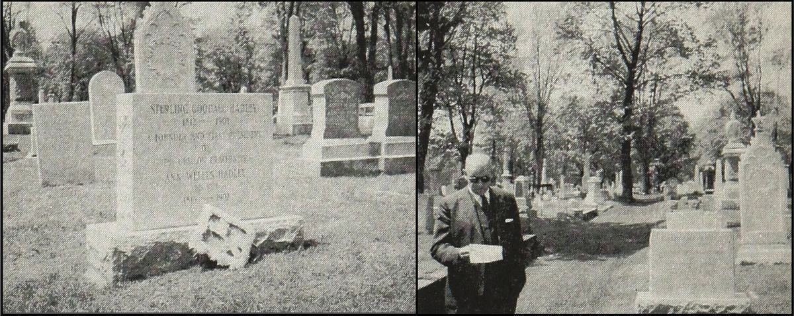
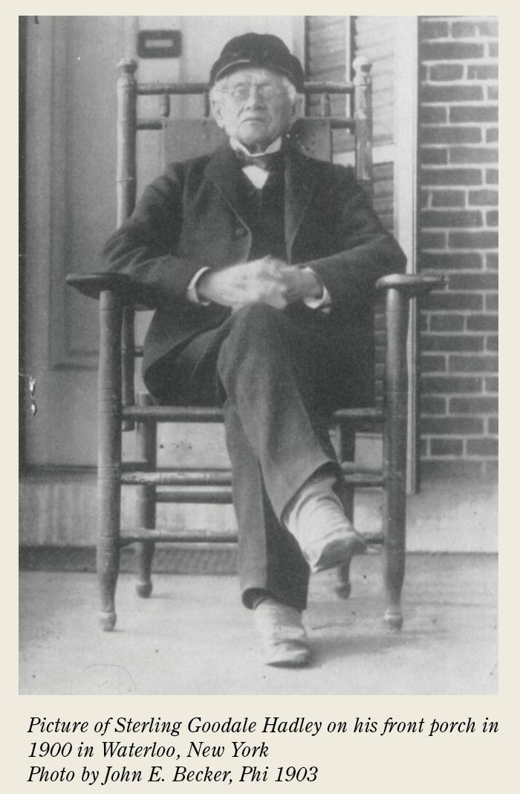
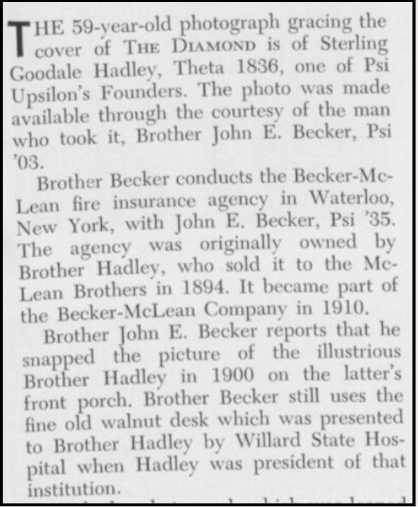
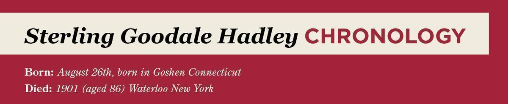

From the Archives · 1812
About our founders: Sterling Goodale Hadley

Sterling Goodale Hadley - Theta 1836 (Union College) by Christopher Lawrence Tang ESQ, Gamma Tau '01 (Georgia Tech)
A letter arrived on the desk of Psi Upsilon headquarters in late 1957 appealing on behalf of a gravestone. Brother Jeff C. Becker, Sr., Psi 1903 (Hamilton) described the sad state of affairs at the local history cemetery where one of the original founders Sterling Goodale Hadley, Theta 1836, (Union College) laid to rest in a poorly marked grave.¹
Sterling Goodale Hadley arrived in this world on August 26th, 1812 in the town of Goshen, Connecticut. Born to Stephen Hadley and Laura Hadley nee Goodale, the young man spent much of his youth moving from place to place.² He attended Egremont Academy, the equivalent of a high school, then embarked upon higher education at storied Union college.
Upon arriving at Union, young Sterling took up association with uncle (oft called cousin) Samuel Goodale, Theta 1836. Samuel soon introduced him to his coterie including Merwin Henry Stewart, Theta 1837, and George Washington Tuttle, Theta 1836. Sterling joined the Delphian society, as did most students of Union college, but found the goals of the Delphians at odds with their stated goals. Though the Delphian society claimed to be a literary society of friendship, Hadley recalled in later years that the Delphians in practice constituted a "political" establishment in which "we younger members were mere pawns." ³

Soon, discussion began among the young men of founding their own society whose purpose would conform to the ideals of friendship and literary enlightenment.
Hadley contributed in ways large and small, from coining the rejoinder "Good night thine always" to serving as the first President of our society. Such esteem by his fellow founders earned the moniker of being the "Father" of the fraternity and one can scarcely imagine what shape our society would have without his commitment and energy.
Upon graduation from Union as Phi Beta Kappa, Hadley taught for a year, but soon he would read with the Representative Samuel Birdsall.¹ Possibly as part of his service to Birdsall, Hadley delivered a speech to the village of Waterloo, New York at their Independence Day Parade in 1937.4 Hadley settled into that humble village of Seneca Valley as his home for the rest of his life.

"We have had no occasion to regret our, start or growth, or the character of the men who have belonged to the society at Union and elsewhere."
-Sterling Goodale Hadley, The Epitome of Psi Upsilon (1884)
The New York Bar admitted Sterling Goodale Hadley in 1939 and soon he opened a law practice. In that same year, on October 2, he wed Ann Wells and their love bore the fruit of a long and happy marriage as well as many children. Over the next forty years, Hadley served and developed Waterloo in numerous capacities including multiple stints within various positions of government and committee for every public service whether it be railroads, gas lighting, or school boards. As a man of great business and industry, Hadley worked as a lawyer with various partners along the way and opened an insurance agency. He would serve as a judge also.

Hadley's service and accolades extended beyond the environs of Waterloo. In 1861, he helped assemble the Wright Guard to serve in the Civil War. Near the end of his career he served as state assessor and in so doing visited every county in the state.
Along the hurrying years, Hadley's bond with the brotherhood only grew stronger with age. Hadley frequently attended Psi Upsilon conventions later in life and served as honorary President twice. He remained close with his fellow founders, especially his kinsman Samuel Goodale who attended Hadley's 50th wedding anniversary festivities in Waterloo.
Sadly, a lifetime of remunerative industry did not save Hadley from cruelties of misfortune and references later in life note him having lost a fortune and returning to work. In those later years it is also noted that he had a particularly strong relationship with the brotherhood.

Sterling Goodale Hadley left this Earth in 1902 and lays interred a few plots away from his beloved wife Ann. A representative from the Psi Upsilon executive council attended the ceremony and flowers were sent.
Left: the new marker established by Psi Upsilon, and the clasped hands wreath laid at the graveside during the dedication. Right: John F. Bush Jr, Upsilon 1922 (Rochester) reading the dedication address.
Fifty-Nine years later, in the fall of 1960, a gathering of brothers convened at Hadley's grave. Responding to Becker's letter, the executive council approved of funds to refurbish and restore the grave marker for the beloved father of the fraternity. Verses of Dear Old Shrine echoed through the tombstones that sunny afternoon showing once again that no time can part the brotherhood.

1836 | Matriculates to Union college, co-founds Psi U, first President
1836 | Graduated from Union Phi Beta Kappa, teaches at Avon Springs academy
1837 | Reads/interns with a Representative Samuel Birdsall
1838 | Delivers speech at the Waterloo 4th of July parade
1839 | Sdmitted to the New York Bar and forms a law office with Samuel Birdsall
1839, Oct 2 | Marries Ann Wells
1843 | Declines invitation to Psi U Decennial due to court conflict
1840 | Founds an insurance agency in Waterloo
1845 | Co-founds Delphian Lodge house chapter in Waterloo
1853 | Elected to NY state legislature for the 1854 session
1855 | Mother Laura Goodale Hadley (sister of Samuel Goodale) dies at Egremont, MA - appointed to investigate gas and gas lights for Waterloo. Construction began the following year
1856 | Elected Judge, Surrogate, and Register in Bankruptcy, served four years
1860 | Headed campaign to build an Episcopal church with a subscription list "6 feet long". Become one of the first Wardens of St. Paul's Episcopal church.
1861 | Helped recruit troops for the Civil War for Capt. John F. AIkens "The Wright Guards" - Formed law office with Weaver to be Hadley & Weaver
1863 | Survey of the water rights of Seneca county
1865 | Appointed to the founding board of the Willard Asylum and Hospital, serves for over 30 years. Hadley Hall named after him, appointed to help revise the Waterloo, NY village charter
1867 | Delegate to the NY Constitutional convention
1871 | Founding member of the Board of the new Waterloo Union School (primary school)
1873 | State assessor of NY, serves till 1880
1875 | Buys the first typewriter in Waterloo - Board member of the Waterloo Historical Society
1878 | Recounts to the Diamond his account of the founding of Psi U, serves as honorary president of the Psi U convention -elected president of Waterloo Historical Society
1883 | Serves on the Board of Hobart College till 1893 -attends the Psi U Semicentennial Convention
1884 | serves as honorary president of the Psi U convention
1889, Oct 2 | 50th wedding anniversary celebration attended by Samuel Goodale, Theta 188X
1892 | Hadley Hall built at Willard Asylum
1895 | Retires
1898 | Attends Psi Upsilon Convention with the two other surviving founders. This will be the last time all three will be in the same room together.
1899 | Convention sends a telegram of greeting To Martindale, Tuttle, and Hadley as the 3 surviving members
1901 | death & funeral
Footnotes:
1. Diamond of Psi Upsilon Vol 1 No 47 (1961) https://psiu.org/wp-content/uploads/2023/06/Diamond-of-Psi-Upsilon-1961-1.-Vol047-Num2-Win.pdf
2. Portrait and Biographical Record of Seneca and Schuyler Counties , New York (1895) https://www.mygenealogyhound.com/New-York-Biographies/Seneca-County-NY-Biographies/sterling-g-hadley-genealogy-seneca-county-new-york-waterloo.html
3. The Epitome of Psi Upsilon (1884) https://psiu.org/wp-content/uploads/2023/04/1884-The-Epitome-of-Psi-Upsilon-reprint-w-cover.pdf
4. A History of the Village of Waterloo by John E. Becker (1949) a Psi 1903 (Hamilton)
Click to access H007443.pdf
5. https://psiu.org/wp-content/uploads/2023/04/1884-The-Epitome-of-Psi-Upsilon-reprint-w-cover.pdf